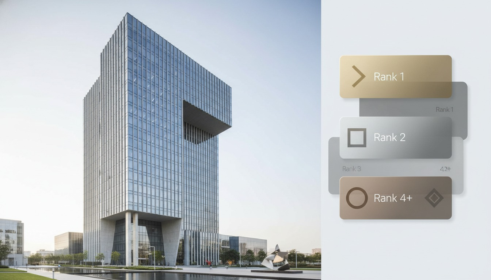

Open any search for "best AI tools for architects 2026" this week and the results pour out faster than you can read them. Coursiv has 17. Chaos's blog has a Top 20. Moldaspace counts 12. RapidRenders, xpressrendering, Rendair, aimagicx, monograph, a Reddit thread, each with its own ranked guide, each promising the definitive set. We pulled the day's crop into one place and read them back to back. The striking thing is not how different they are. It's how nearly identical.
Strip the branding and most of these lists are the same dozen names in a slightly reshuffled order: Midjourney, Veras, Adobe Firefly, Stable Diffusion, TestFit, Maket, Archistar, Autodesk Forma, ARCHITEChTURES, Kaedim. That convergence is not consensus. It's the signature of SEO-farmed content, articles built to rank for a high-traffic query by researching the articles already ranking for it. The result is a feedback loop where the same tools recirculate not because practitioners agree they're best, but because the last list said so.
This is the third audit in our running series, after Monograph's list and the Reddit top five. The pattern has only intensified. So rather than write a sixteenth list, we want to give you something more useful: a filter for reading the ones that already exist.
The tell: nobody tested anything
The honest ones admit it. Coursiv's 17-tool guide, to its credit, flags that several featured products are too new for verdicts, "it only came out in early 2026, so there aren't any independent reviews yet" for one, "almost no independent reviews" for three others. The pros and cons read as summarized user sentiment, not firsthand use. Chaos's Top 20 is descriptive throughout: each tool gets a tidy paragraph of what it claims to do, with no evidence anyone ran it on a real project. To be fair to Chaos, that list lives on the blog of the company that makes Veras and Enscape, so its enthusiasm has a commercial gravity worth keeping in mind.
None of this makes the lists worthless. It makes them a directory, not a review. A directory tells you a tool exists and roughly what category it sits in. A review tells you whether it survives contact with your geometry, your deadline, and your client. The flood gives you the first and dresses it up as the second.
A listicle is a list of candidates to investigate, not a ranking to trust.
How to spot a list that did the work
You can sort the useful from the farmed in about thirty seconds. The signals that someone actually used the tools:
- Concrete output. Real project screenshots, not stock hero images or vendor marketing renders.
- Named failure modes. "Drifts the facade on busy geometry," "chokes on imported DWGs," is something only a user learns.
- Specifics that age. Exact pricing tiers, plugin hosts, file formats, version numbers. Farmed content stays vague so it never goes stale.
- Narrow scope. A piece honestly testing tools covers three or four in depth, not twenty across every discipline in one sitting.
- Admitted limits. A writer who tells you where a tool is weak has probably met it.
By that measure, the breezy "covers rendering, BIM, floor plans, site analysis, and project management in 2,000 words" format is self-disqualifying. No one tested fifteen tools across five disciplines for one article. They couldn't.
Claim versus what holds up
Here's where we can be concrete. Across the day's lists, five tools appear again and again as headline picks. Below is how the listicle framing compares to what we've seen when these tools meet real project work, our own and that of practitioners we trust. This is reporting on a category we use daily, not a fresh lab test of each tool, and we've marked where our read is opinion.
| Tool | The listicle claim | What holds up when you use it |
|---|---|---|
| Veras | "Best-in-class AI visualization, plugs into your CAD/BIM" | Earns it. The CAD/BIM connection is the real differentiator, it renders the geometry you modeled, not a guess at it. |
| Midjourney | "Best for AI concept visualization" | True but caveated. Gorgeous concept imagery; knows nothing about your actual building. Mood board, not proposal. |
| TestFit | "Real-time site solution generation" | Earns it. Genuinely useful for early massing and feasibility, a job other "AI tools" don't even attempt. |
| Adobe Firefly | "Best for design iteration & presentations" | Fine, but generic. It's a good generative-fill tool, not an architecture tool. Padding on most of these lists. |
| Maket / new entrants | "AI floor plan generation," ranked confidently | Unproven. Even the lists admit "almost no independent reviews." Treat as a candidate, not a recommendation. |
The split is clean. The tools that earn their recurring spot are the ones built for a specific architectural job and plugged into how architects actually work: Veras and its CAD/BIM tie-in, TestFit for feasibility, Forma for site analysis. The filler is the general-purpose image generators, Firefly, DALL-E, Stable Diffusion, that belong in any creative-tools list and tell you nothing about architecture. And the riskiest entries are the brand-new products ranked with confidence the evidence doesn't support.
Before you trust a single pick, ask three questions. One: does this tool do an architecture-specific job, or is it a generic creative tool in disguise? Two: does the list show evidence anyone ran it, screenshots, pricing, failure modes, or just adjectives? Three: is the tool established enough to have a track record, or is it being ranked on a press release? A pick that passes all three is worth your shortlist. The rest are names to research, not tools to adopt.
Why the same names keep winning
It's worth understanding the machinery, because it explains what to ignore. These articles compete for one of the most valuable queries in the AEC software space. Whoever ranks captures a stream of architects shopping for tools, and many of these lists monetize that traffic through affiliate links, lead capture, or, in Chaos's case, by sitting on the vendor's own blog. The incentive is to rank, and the fastest way to rank is to look comprehensive and match what's already ranking.
So a new entrant gets cited once, then cited because it was cited, then it's "an industry favorite" with no one having checked. Meanwhile a genuinely strong but unglamorous tool, something that quietly automates Revit documentation, say, gets a one-line mention or dropped entirely because it doesn't make for an exciting ranked entry. The list optimizes for the article, not for you.
This is also why the counts keep climbing. 12 became 17 became 20. A longer list looks more authoritative and ranks for more long-tail searches, so the padding is a feature of the format, not an accident. The marginal tools at positions 13 through 20 are usually there to pad the headline number.
What the flood actually buries
The real cost isn't the bad picks, it's the signal loss. Somewhere in those twenty entries are two or three tools that would genuinely change your week. The list gives them the same weight as the filler, the same confident paragraph, the same star treatment. A reader skimming for a recommendation can't tell the load-bearing pick from the SEO ballast. That flattening is the harm. The few tools that matter get the same airtime as the fifteen that don't.
Our take: the lists are a map, not a verdict
We don't think these articles are evil, and cynicism for its own sake is cheap. As a survey of what exists in 2026, the flood is a perfectly decent map of the territory. If you've never heard of Veras or TestFit or Forma, a good listicle is how you find the names, and that has value. The mistake is treating the map as a verdict, letting a ranking you can't audit make a decision about your stack and your budget.
Our honest position: read one or two of the better lists to build a shortlist of candidates, then throw the ranking away. Pick the two or three tools that fit your actual workflow, the rendering plugin that talks to your BIM, the feasibility tool for the work you actually do, and test them on a live project before you commit. Thirty minutes of your own hands on the tool will tell you more than twenty paragraphs written by someone who never opened it.
And be especially wary of the confident pick on a tool that launched last quarter. "Best of 2026" for a product with no track record is the listicle at its least trustworthy. New isn't bad, but new ranked first is a claim no one has earned yet.
If you're tool-shopping this week
Run the three-question filter on the next list you open. Cross out every generic image generator, every brand-new entry ranked on hype, and every pick with no evidence behind it. What's left, usually three or four architecture-specific tools with a real track record, is your shortlist. Test those, ignore the rest, and don't let a number in a headline do your thinking.
We audit the lists so you don't have to trust them. Join the studio newsletter for our running teardown of AI-tool rankings and the honest, tested version of which tools actually hold up on real project work.
Based on a same-day reading of five 2026 "best AI tools for architects" listicles (Coursiv, Chaos, Moldaspace, RapidRenders, xpressrendering) plus reporting on tools Vista Studios uses. The claim-versus-reality table reflects our practitioner experience and is marked as opinion where it is opinion, not a fresh head-to-head lab test of every tool. No affiliate relationship with any tool or publisher named.